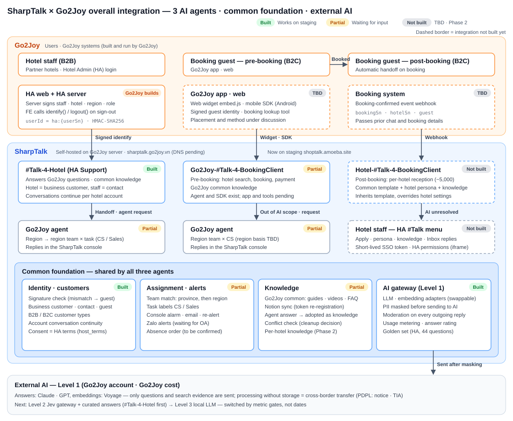
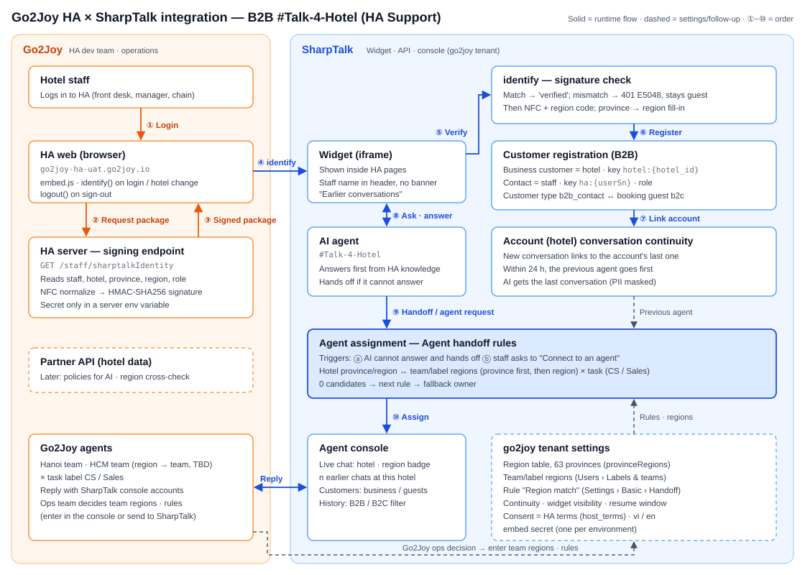

SharpTalk × Go2Joy — Integration Structure · Requests to Go2Joy · Work Checklist
All SharpTalk-side Phase 1 (#Talk-4-Hotel) features work on staging. Most of what remains is what Go2Joy needs to provide (servers, HA signing, the assigned teams and agent roster, terms of use). This document gathers the scattered requests into one list, shows the overall integration structure as diagrams, and splits the work of each side into checklists.
| Item | Details |
|---|---|
| To | Go2Joy PM · HA dev team (back end · FE) · Infrastructure · Operations (CS) · Legal |
| From | SharpTalk (Amoeba) |
| Date / version | 2026-10-22 · v1.1 (phases aligned with plan v1.2) |
| References | SharpTalk × Go2Joy channel structure (2026-10-21) · Go2Joy-SharpTalk AI operating strategy Level 1·2·3 (2026-10-22) · Integration checklist & schedule (2026-10-12) · Project plan PLN-261015 · HA integration guide v1.3 (sent together) |
Summary
Phase 1 scope is B2B
#Talk-4-Hotel(HA Support). SharpTalk has deployed and verified on staging: signature verification, registering the hotel as a business customer, conversation continuity per hotel account, hotel region → team assignment, agent notifications, answer rating and the golden evaluation set (3.2).What is blocking is Go2Joy input.
- G1 production server · DNS: as of 10/22 there is no DNS record for
sharptalk.go2joy.vn. - G10·G11 HA signing · embed: not built yet.
- G20~G23 teams · roster · task rules · absence order: not received yet.
- G4·G5 terms · privacy notice: not received yet.
In the project plan (PLN-261015) the deadline for these items was 10/22. Past it, 10/31 becomes a staging opening instead of a production opening (section 4).
- G1 production server · DNS: as of 10/22 there is no DNS record for
Phases 2 and 3 (B2C pre-/post-booking, HA menu iframe, booking-confirmed webhook, point billing) are listed as discussion items only (2.5). Per plan v1.2, Phase 2 is Go2Joy Philippines (booking guest support + HA support, run by Go2Joy) and Phase 3 is per-hotel AI agents (hotels answer directly — HA menu, point billing). Once we get answers, it starts as a separate requirements document.
AI operation: we are at Level 1 (external AI + RAG). Under the contract Go2Joy bears infrastructure and AI API costs, so the production AI key must be in Go2Joy's name (G2). Of the 5 things Level 1 must build, 4 already exist; only per-message AI logging needs to be added (3.2 S30).
1. Overall integration structure

| Type | Agent | Entry | Human handoff | Status |
|---|---|---|---|---|
| B2B | #Talk-4-Hotel (HA Support) |
Widget after HA login + signed identify | Go2Joy agent of hotel region → region team × task (CS / Sales) | Built on SharpTalk · waiting for HA signing and agent roster |
| B2C pre-booking | Go2Joy-#Talk-4-BookingClient |
Go2Joy app · web (web widget / mobile SDK) | Go2Joy agent of region team × CS | Agent and mobile SDK exist · app integration and booking tools under discussion |
| B2C post-booking | Hotel-#Talk-4-BookingClient |
Automatic handoff on the booking-confirmed event | Hotel staff (HA #Talk menu) or Go2Joy CS — to be confirmed | Phase 3 · not built |
1.1 B2B #Talk-4-Hotel detailed flow

1.2 Responsibility boundaries
| Work | Go2Joy | SharpTalk (Amoeba) |
|---|---|---|
| Servers · domain · TLS · backups, AI API accounts · costs | Owner (owns infrastructure and bears costs under the contract) | Provides specs and procedures |
| SharpTalk installation · updates | Approval · runtime environment | Owner (remote support, provides releases) |
| HA signing endpoint · widget embed | Owner (server signing code) | Guide · test vectors · verification |
| Terms · privacy notice, PDPL judgment | Owner (Legal) | Draft notice wording, masking implementation |
| Region teams · task rules · agent roster · working hours | Owner (decision) | Provides settings screens and input support |
| Knowledge content (policies · guides · FAQ) | Owner (final content) | Conversion · registration · conflict-check tools |
| AI settings · quality measurement · tuning | Review | Owner |
| First-line incident response | Infrastructure | Application |
2. Requests to Go2Joy
Priorities:
- P0: Phase 1 cannot open in production without it.
- P1: needed for Phase 1 operating quality.
- P2: needed from Phase 2 onward.
Status is as checked by SharpTalk on 2026-10-22.
2.1 Infrastructure · contract · privacy
| # | Request | Details | Owner | Priority | Status |
|---|---|---|---|---|---|
| G1 | Production server + SSH + DNS | sharptalk.go2joy.vn, TLS, Vietnam region. Specs: pilot 4 vCPU / 8 GB / 80 GB, production 8 vCPU / 16 GB / 200 GB or more. Storage for daily backups |
Infrastructure | P0 | Not received — no DNS record on 10/22 |
| G2 | AI API accounts · keys (in Go2Joy's name and billing) | Answer LLM (Anthropic Claude recommended, OpenAI possible) and embeddings (Voyage). A person to receive monthly usage limits and exhaustion alerts | Infrastructure · Finance | P0 | Production keys not received |
| G3 | Mail sending account | Go2Joy SMTP for agent notification email | Infrastructure | P1 | Not received |
| G4 | Privacy · PDPL review | Cross-border transfer notice (processors Anthropic · Voyage, processing location), whether an impact assessment (TIA) is needed, masking scope, conversation retention (draft 180 days), breach notification procedure | Legal | P0 | No reply |
| G5 | HA terms URL + version, AI use notice wording | Basis for recording HA terms consent as widget consent (consent banner skipped) | Legal · HA | P0 | Not received |
| G6 | Confirm contacts · channel | PM, HA back end · FE, infrastructure, operations (CS lead), legal, daily check-in channel (10/12 request R13) | PM | P0 | To be confirmed |
| G7 | Service contract clauses | Ownership of trained assets: curated answers are Go2Joy data; Jev, the training pipeline and the generic base model are Amoeba IP; ownership of weights fine-tuned on Go2Joy data. How cost savings are shared, who runs Level 3 (MLOps) | Management · Legal | P2 | Under discussion |
2.2 HA integration (#Talk-4-Hotel) — specification in guide v1.3
| # | Request | Details | Owner | Priority | Status |
|---|---|---|---|---|---|
| G10 | HA server signing endpoint | userId = "ha:" + userSn. 5 attributes hotel_id·hotel_name·province·region (region code)·role, signed with HMAC-SHA256 after NFC normalization. Send back the results of test vectors T1~T5 (guide 5.2·5.4) |
HA back end | P0 | Not built |
| G11 | HA FE embed | embed.js + locale. Call identify once login is confirmed and whenever the hotel changes; call logout on sign-out. Allow SharpTalk domains in CSP (script-src·frame-src·connect-src) and CORS (guide 5.3) |
HA FE | P0 | Not built |
| G12 | Signing key option | A: embed secret issued by SharpTalk (recommended, issued on staging) / B: shared Go2Joy client secret | HA back end | P0 | Decision pending |
| G13 | UAT test accounts | 1 Quản lý (multi-hotel) + 1 Lễ tân (single hotel). Include at least 2 hotels in different regions |
HA | P0 | To be confirmed |
| G14 | Widget visibility (Q2) | Whether to show other staff of the same hotel's conversations in the widget. Current default: own conversations + "n earlier inquiries from this hotel" count. Agents and AI see the whole hotel | Operations | P1 | Default applied, awaiting confirmation |
| G15 | Resume window (Q3) | How long after a conversation ends the same agent is assigned first. Current default 24 hours | Operations | P1 | Default applied, awaiting confirmation |
| G16 | Signature expiry (ts) |
Prevents package reuse. If adopted, both sides change the spec together (guide section 7) | HA back end | P1 | Decision pending |
| G17 | Role differences (Q5) · hotel address · district (Q6) | Is different handling for Quản lý / Lễ tân needed? Address (settingList.address) · district (districtName) are Phase 3 |
Operations | P2 | Decision pending |
2.3 Assignment · operations (Go2Joy operations team)
| # | Request | Details | Owner | Priority | Status |
|---|---|---|---|---|---|
| G20 | Region → team mapping, assignment region unit | Are teams split by region (4) · province · district? Proposal: north·north_center → Hanoi team, south·south_center → Ho Chi Minh team. Da Nang · Central Highlands (13 provinces of south_center) need confirmation |
Operations | P0 | No reply |
| G21 | Agent roster | Name · email · team · task label (CS / Sales) · rank. We issue console accounts once received | Operations | P0 | Not received |
| G22 | Sales inquiry rules | Which inquiries are Sales (e.g. settlement · contract · commission). Keywords and 5~10 example inquiries. Without them everything goes to CS | Operations | P0 | Not received |
| G23 | Working hours · absence order · fallback owner | Proposal: backup owner → team queue → offline message. Who receives when the region is unknown (no hotel selected) | Operations | P0 | No reply |
| G24 | Zalo OA + ZNS template approval | For sending agent notifications via Zalo as well | Operations | P1 | Not received |
| G25 | New province names in the region table | Send a new table once names after the 2025-07 merger (63 → 34 provinces) come into use | Operations | P1 | Waiting |
| G26 | Supported languages | Any languages beyond Vietnamese and English | Operations | P2 | Decision pending |
Go2Joy's master account can also enter team regions and assignment rules directly in the SharpTalk console. The places are Users › Labels & teams › Regions and Settings › Basic › Agent handoff › Region match. If the region → team mapping changes, only the team's regions need editing; the rules stay as they are.
2.4 Knowledge · AI quality
| # | Request | Details | Owner | Priority | Status |
|---|---|---|---|---|---|
| G30 | Re-register the Notion knowledge source | On 10/21 the source and token were deleted together, so the HA guide (#2501) · FAQ (#3599) are inactive. Reconnecting the same pages restores them automatically (fix deployed) | Operations | P0 | Waiting |
| G31 | Decide on knowledge conflict cleanup | 78 pairs classified on 10/15: 3 real fixes, 3 duplicated policy documents, 32 FAQ copies. Decide which to keep | Operations | P1 | Decision pending |
| G32 | Review the golden evaluation set | Confirm the correct answers of the 44 #Talk-4-Hotel questions. Provide representative questions when building the pre-booking agent's set. This is the regression baseline for engine changes and level transitions |
Operations | P1 | Review pending |
| G33 | Quality labels in operation | Agents rate AI answers as accurate/inaccurate and adopt corrected answers as knowledge. This is the data for the Level 2 (curated answers) transition gate | Operations | P1 | After opening |
| G34 | Partner API (follow-up) | Production client key, SharpTalk server IP allowlist, Hotel Feed coverage (all HA hotels), fix the behavior that returns everything when no hotel matches, a test environment that verifies signatures (guide 7.1) | HA back end | P2 | Only test key received (10/21) |
2.5 Phases 2 and 3 — B2C pre-/post-booking (discussion items)
G40–G43 and G47 are needed for Phase 2 (Philippines booking guest support); G44–G46 for Phase 3 (per-hotel AI agents).
| # | Request | Details | Priority |
|---|---|---|---|
| G40 | Booking-confirmed event webhook | Handoff point. bookingSn·hotelSn·guest identity·signature, link to the earlier conversation session, a thread per booking (hotel) when several hotels are booked |
P2 |
| G41 | Go2Joy app · web embed | Web widget / Android SDK (verified on device) / iOS. Signed identity for logged-in guests (separated from HA staff by a userId prefix), booking lookup tool API |
P2 |
| G42 | Region basis for pre-booking guests | The region of the hotel being searched or booked, or the guest's location | P2 |
| G43 | Post-booking handoff · scope · retention | Human handoff target (hotel staff / Go2Joy CS / split rule), whether booking changes · cancellations · refunds go to Go2Joy, when to close conversations after check-out and how long to keep them | P2 |
| G44 | HA menu (iframe) | Add a SharpTalk menu to HA (apply · persona · knowledge · Inbox), a short-lived SSO token issued by the server (never passing the HA token as is), permission link (Quản lý settings / Lễ tân Inbox) |
P2 |
| G45 | Reception agent operation | Common template content (managed by Go2Joy), application approval process, onboarding order for about 5,000 hotels | P2 |
| G46 | Billing | Token → point conversion rate, what happens when points run out (pause / connect to staff), where top-ups and balance are shown | P2 |
| G47 | Zalo channel support | Scope of receiving and answering Zalo conversations in the console | P2 |
Items from the 10/12 request (R1~R16) not repeated in this document (staging access, existing API list, operational data samples, pilot hotels, release · incident process) will be checked for receipt at the next meeting.
3. Work checklist
3.1 Go2Joy
Before Phase 1 production opening (P0)
- G1 Production server · SSH · DNS
sharptalk.go2joy.vn· TLS · backup storage - G2 Production AI API keys (in Go2Joy's name) — answer LLM + embeddings
- G4 PDPL review (cross-border transfer notice · TIA · retention) and G5 HA terms URL · version · AI notice wording
- G6 Confirm contacts · daily check-in channel
- G10 HA server signing endpoint (v1.2 spec) + send back T1~T5 results
- G11 HA FE embed (identify / call again on hotel change / logout, CSP · CORS)
- G12 Decide signing key option (A recommended)
- G13 UAT test accounts (
Quản lý·Lễ tân, including hotels in different regions) - G20 Region → team mapping and assignment region unit
- G21 Agent roster (name · email · team · task label · rank)
- G22 Sales inquiry rules
- G23 Working hours · absence order · fallback owner
- G30 Re-register the Notion knowledge source
UAT (guide v1.3 §8.2)
- Not logged in · logged in · logged out · no hotel selected · value tampered without re-signing
- Business customer registration · same staff logs in again · other staff of the same hotel
- Ask again after a conversation ends · another PC · next day
- AI handoff · "Connect to an agent" · assignment results for hotels in all 4 regions
- UAT sign-off and production opening approval
Operating quality (P1)
- Confirm G14 widget visibility · G15 resume window · G16 signature expiry
- G24 Zalo OA · G25 new province names in the region table
- G31 knowledge conflict decision · G32 golden set review · G33 agent rating and answer adoption in operation
Phase 2 and 3 discussion (P2)
- Answers to G40~G47 (booking-confirmed webhook, app · web embed, region basis, post-booking handoff · scope · retention, HA menu iframe · SSO, reception operation, billing, Zalo)
- G7 service contract clauses · G17 role differences · address · district · G26 languages · G34 Partner API
3.2 SharpTalk
Done (working on the staging go2joy tenant)
- S1 Signed identify verification, session "verified", HA terms consent mode, staff name in header (#637 · #642 · #656)
- S2 Assignment rules: region × task, two triggers — AI handoff and "Connect to an agent" (#638)
- S3 Agent personal email · re-alert when not accepted (#639)
- S4 Answer accuracy rating (#640), automatic scoring of the 44-question HA golden set (#611)
- S5 Widget design, satisfaction survey, languages fixed to vi / en (#650 ~ #662)
- S6 Region code · NFC normalization, region fill-in from 63 provinces of the region table, team · label regions, "Region match" assignment rule (#687)
- S7 Business customer (hotel) · contact (staff) registration, B2B / B2C split, conversation continuity per hotel account, previous agent assigned first, previous conversation summary for AI (#689)
- S8 Updated schema for new server installs (#692) — ready for the Go2Joy server install
- S9 HA integration guide v1.3, this document
Once Go2Joy input arrives
| # | Work | Input needed | Effort (est.) |
|---|---|---|---|
| S20 | Send the staging embed secret over a secure channel | G12 (A) | Same day |
| S21 | Issue agent console accounts, set teams · task labels | G21 | Same day |
| S22 | Enter team regions · "Region match" rules · Sales keywords · fallback · working hours, check with the rule preview | G20 · G22 · G23 | Half a day |
| S23 | Enter HA terms URL · version (consent mode is already HA terms) | G5 | Same day |
| S24 | Install on the Go2Joy server (VN profile), migrate staging knowledge · settings (region table · conversation continuity · rules), reindex, connect the golden-set deploy gate | G1 · G2 · G3 | 4 days |
| S25 | Confirm Notion resync, run knowledge conflict cleanup | G30 · G31 | 1~2 days |
| S26 | Zalo agent notifications | G24 | 4 days |
| S27 | Joint UAT → test result report | G10 · G11 · G13 | 3 days |
What SharpTalk keeps working on
- S28 Show the handoff reason in the console, conflict check before adopting knowledge (PLN-261015 D5 · D6)
- S29 Signature expiry (
ts), receiving hotel address · district — after G16 · G17 decisions - S30 AI Level 1 additions: per-message AI log (model · tokens · latency · rewritten question · outcome). Today there is only a daily usage total. Add Go2Joy booking numbers to masking once we get their format. Extend golden sets per agent
- S31 Requirements documents for Phase 2 (Philippines) and Phase 3 (per-hotel AI agents) (B2C pre-booking integration, reception agent template, HA menu iframe · SSO, receiving the booking webhook, point billing) — after the 2.5 answers
3.3 AI operation Level 1 — prerequisite check
The AI operating strategy says Level 1 must build these 5 things before moving to Level 2·3.
| Prerequisite | SharpTalk today | Remaining |
|---|---|---|
| ① LLM · embedding ports | Exists — engine adapters (Anthropic · OpenAI · Voyage · stub), per-tenant engine selection. Changing engines is a settings change | — |
| ② Conversation log schema | Partial — message text · language · intent · search evidence, conversation outcome (resolved · handed off), daily token usage | Per-message model · tokens · latency · rewritten question (S30) |
| ③ Quality labels | Exists — answer accuracy rating, handoff flag, agent answer → knowledge adoption | Accumulate in operation (G33) |
| ④ PII masking | Exists — phone · email · order numbers etc. masked before sending to AI and in logs | Add the Go2Joy booking number format (S30) |
| ⑤ Golden evaluation set | Exists — 44 #Talk-4-Hotel questions scored automatically |
Go2Joy review (G32), extend to other agents |
4. Schedule impact
The PLN-261015 decision: if Go2Joy's prerequisites (server · DNS, HA embed · signing, agent roster) are not ready by 10/22, 10/31 becomes a "staging opening". As of 10/22 these items have not been received.
| Path | Conditions | Result |
|---|---|---|
| Staging opening (10/31) | G10 · G11 · G13 · G20 ~ G23 | HA UAT points at SharpTalk staging and real agents respond. Operating data is still outside the Go2Joy server (on staging) |
| Production opening | Above + G1 · G2 · G4 · G5 | Install on the Go2Joy server (S24, 4 days) → UAT (S27, 3 days) → opening. About 7 business days from the day G1 arrives |
5. Decisions needed — meeting summary
| Decision | SharpTalk proposal / current default | Related |
|---|---|---|
| Signing key | A — embed secret issued by SharpTalk | G12 |
| Region → team | north·north_center → Hanoi, south·south_center → Ho Chi Minh |
G20 |
| Absence order | Backup owner → team queue → offline message | G23 |
| Widget visibility | Own conversations + count of the hotel's earlier inquiries (applied) | G14 |
| Resume window | 24 hours (applied) | G15 |
| Signature expiry | Recommended | G16 |
| Post-booking handoff target | Hotel staff first, Go2Joy CS if no response (proposal) | G43 |
| Ownership of trained assets | Curated answers = Go2Joy, Jev · pipeline · generic model = Amoeba, fine-tuned weights stated in the contract | G7 |